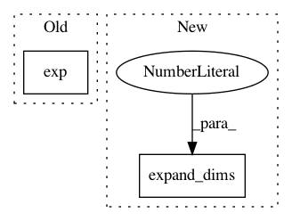

506b234094009d55d326f1ce957f53f15d4b65ee,geomstats/spd_matrices_space.py,,group_exp,#Any#,35
Before Change
[eigenvalues, vectors] = np.linalg.eigh(sym_mat)
diag_exp = np.diag(np.exp(eigenvalues))
exp = np.dot(np.dot(vectors, diag_exp), vectors.transpose())
return(exp)
After Change
computation for symmetric positive definite matrices.
if sym_mat.ndim == 2:
sym_mat = np.expand_dims(sym_mat, axis=0)
assert sym_mat.ndim == 3
n_sym_mats, mat_dim, _ = sym_mat.shape
assert np.all(is_symmetric(sym_mat))
In pattern: SUPERPATTERN
Frequency: 3
Non-data size: 2
Instances
Project Name: geomstats/geomstats
Commit Name: 506b234094009d55d326f1ce957f53f15d4b65ee
Time: 2018-02-26
Author: ninamio78@gmail.com
File Name: geomstats/spd_matrices_space.py
Class Name:
Method Name: group_exp
Project Name: GPflow/GPflow
Commit Name: 122f4ae6f400f0c43f3fc6a85481264809e678f5
Time: 2016-05-27
Author: james.hensman@gmail.com
File Name: GPflow/kernels.py
Class Name: PeriodicKernel
Method Name: K
Project Name: geomstats/geomstats
Commit Name: a9b58d07768ec06f8718ec2777f2b0293359f5b4
Time: 2020-04-09
Author: hadizaatiti@gmail.com
File Name: geomstats/learning/frechet_mean.py
Class Name:
Method Name: _ball_gradient_descent